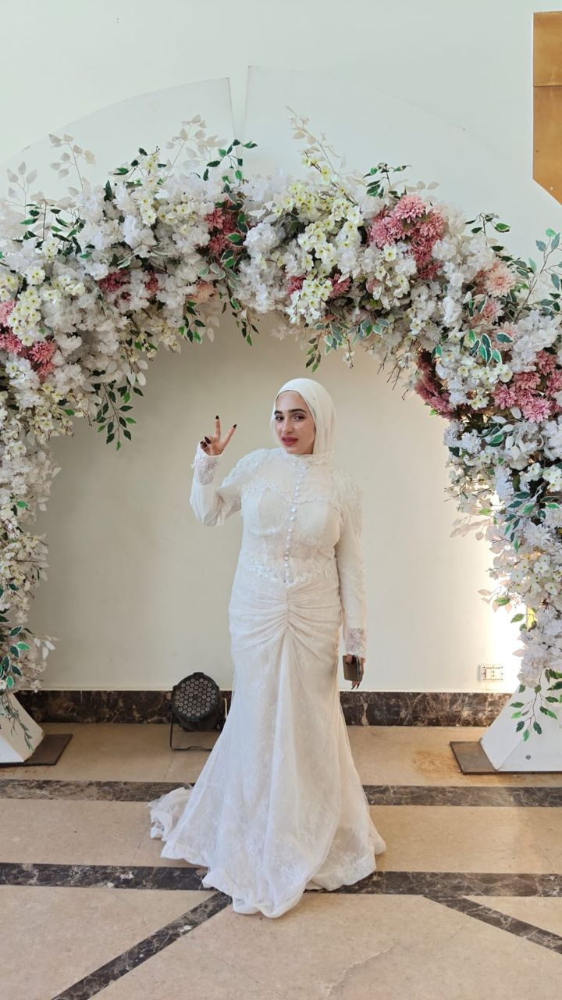
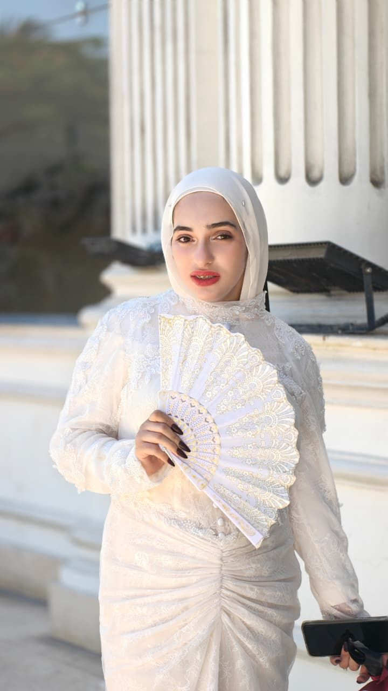
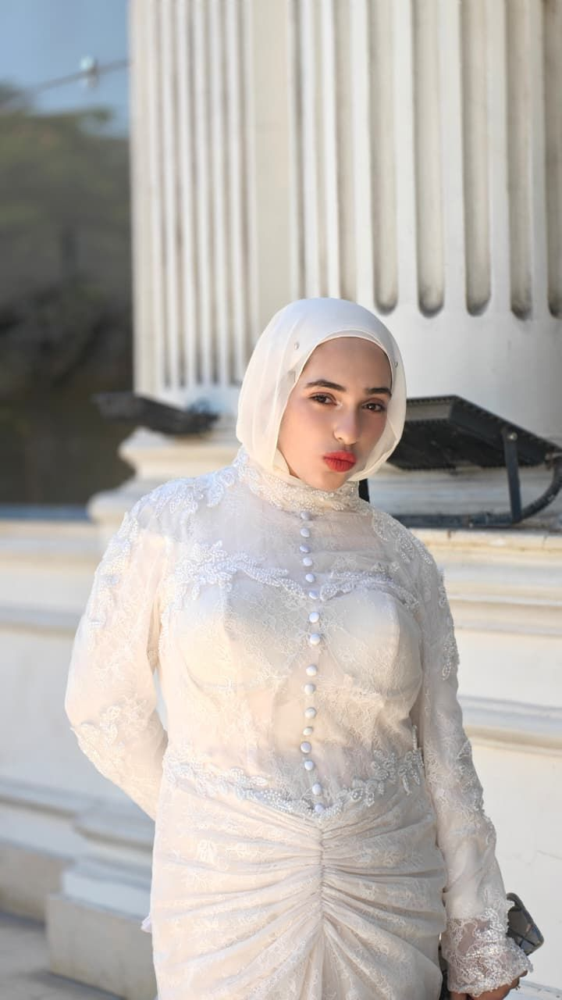
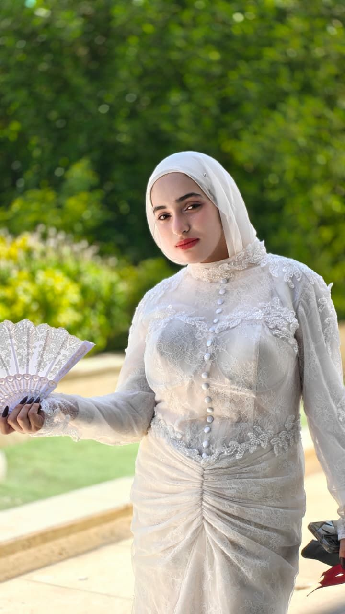

Al Ahly SC
Cairo's red giants — a love that runs in the heart.
✿ Future Interior Designer
Ehnasia, Beni Suef, Egypt
sama.3tef
Dreaming in Colors, Designing Beautiful Spaces.
Soft colors, fresh flowers and rooms that feel like a deep breath — I'm collecting the ideas now, so I can design them for real one day.



About Sama
I see rooms the way others see paintings — color, light, texture and the feeling they leave behind. I'm learning, dreaming and collecting ideas for the spaces I'll design one day.
Moments

Football Corner
Cairo's red giants — a love that runs in the heart.

Hala Madrid — the second club she cheers for.
Social